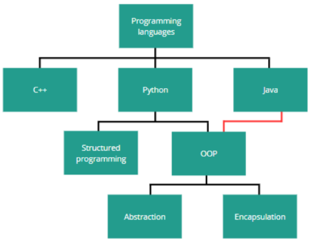
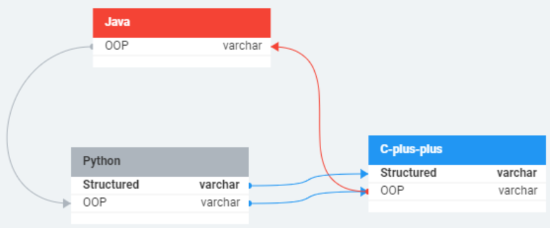

Introduction to databases
Basic concepts
A database is an ordered collection of data from a specific subject area, organized in a way that facilitates access to it (traditional databases were stored as paper documents in files, and it wasn't easy and took a lot of time to access them). Documents describe the database objects (which can be people, books, cars, etc.) and also the relationships between the objects, e.g., who owns the car or borrowed the book.
Computer databases
The advantages of computer databases are quick information search, easy calculations, the ability to store large amounts of data in a small space, and fast data organization. DBMS (DataBase Management System) is a program that manages data in a database and enables its processing, e.g., MS Access or Libre Office BASE. RDBMS stands for Relational DataBase Management System (MS Access is a RDBMS). The database system consists of the database itself and the DBMS. We should design the database so that the user for whom the database is intended does not have to know anything about databases and can still operate it without any problems. To achieve this, the database must have a solid design that determines the user's needs for collecting, storing, and processing data and defining the activities that make up the operations of the database.
Database models
A database model is an abstract description of how data is represented and used. It consists of structure, constraints, and operations. There are four models:
1. Hierarchical model - data has the structure of an inverted tree. Every item, except the main one, is connected to a parent object. A child object can only be created once the parent object exists, and deleting a parent object results in removing all its associated child objects.
2. Network model - this is a modified version of the hierarchical model in which connections between objects create a network, connections at the same level of the data tree are allowed, and information is contained in documents and in the course of network connections.
3. Object-oriented model - it combines the features of computer programs created in object-oriented programming languages with the features of database applications. Data is made available in the form of objects, and their state and behavior are described using tools available in object-oriented programming (properties, methods, object classes). Objects are used to store data and are handled using the same methods. The properties are instances of the same class.
4. Relational model - it is based on a mathematical model of data organization and the concept of relationships. Data is represented in the form of tables (entities). Tables consist of records (rows) with the same structure. Tables create connections between themselves. These connections are called relationships. Due to its functionality, the relational model is most often used in database design. The creator of the theory of this model is Edgar Frank Codd (1970).
Relational database model according to E. F. Codd
The fundamental database object (table) is a representation of relationships in terms of mathematical concepts, but one relationship can be mapped using many different tables. In this theory, table concepts (column and row) are replaced by attribute and tuple. In the relational model, it is assumed that the order of columns and rows in tables is irrelevant and that rows containing the same data are identical. At the intersection of the row and the column, there is a field that contains the smallest, indivisible value, i.e., the part of information that cannot be further divided for reasons of logical consistency. A set of attributes is called a relation schema, e.g., the Merchandise relation schema will be {merch_id, name, price, quantity}. Each attribute is assigned to a domain (a set of allowable attribute values). The domain of the relationship is the sum of the domains of all attributes.
Key
The key of the relation schema is a set of attributes that can be used to uniquely identify a tuple (a tuple is a record). A given scheme may have several keys (candidate keys). Among the keys, one is selected and becomes the primary key.
Data integrity
Data integrity means the correctness of the database structure (compliance with the schema) and the correctness of the data stored in it. Types of integrity constraints:
- Entity (table) integrity - each relationship schema has a primary key, and no element of the primary key can be left empty (NULL).
- Referential integrity - each foreign key value is equal to the primary key value of the specified tuple in the parent relationship or is NULL (undefined).
- General constraints - additional conditions regarding data correctness are specified by users or database administrators.
Integrity rules ensure the correctness and consistency of data in the database. We define them at the level of:
- fields (data types, input masks, data validation),
- tables and relationships (by enforcing referential integrity).
Relational database model
The basic form of data storage is a table. Information is stored in these tables, which consist of rows (records) and columns (attributes). They create connections between themselves called relationships. The combination "primary key value, table name, column name" gives access to any data. NULL (missing information) must be supported. Data integrity should be a natural feature of database design. The benefits of using this model include the efficiency of data storage, the certainty of data integrity (consistency), the possibility of expanding the database, the ability to easily change the database structure, and increasing the speed of data access. The description of such a model includes:
- Data structures - how and according to what principles data storage will be organized and according to what principles we will design it.
- Data manipulation language - how data in the database will be downloaded, saved, modified, and deleted.
- Data integrity - how the correctness of data storage will be ensured.
Primary and foreign keys
- Primary key - a field (or minimum combination of fields) that takes on a different, unique value for each record. This key uniquely identifies the record. It cannot contain repetitive data and cannot be empty.
- Artificial key - a field containing a unique identification number. It functions as a primary key (it is a value created to serve only this purpose).
- Foreign key - a field that refers to the primary key of another table. It is used to create relationships between tables.
Entity
An entity is a clear-cut element of the real world or an imaginary object. Its specific occurrence (instance) must be assigned only to this one specific entity. If we want to create an entity to which, e.g., John Smith and Sara Jones, who are employees of a certain company, will be assigned, it will be called "Employees." If we want to collect data about, e.g., BMW and Mercedes, we will create a "Cars" entity.
Types of Relational Algebra
- Selection operation - it selects tuples (from a relation) that satisfy the provided predicate.
- Projection operation - it projects those column(s) that satisfy any given predicate.
- Union operation - it performs binary union between two tables.
Creating a conceptual model of the database
Conceptual database design means constructing a data schema regardless of the selected data model, target database management system, application programs, or programming language. Entity relationship diagrams are used to create a graphical model of a database, most often the so-called ERD diagrams (Entity Relationship Diagrams). Such a diagram is modeling reality using three elements: entities, their attributes, and relationships between entities. To create these diagrams, we use CASE (Computer Aided Software Engineering) tools. An example of this tool is DBDesigner.
Attributes
An attribute is a property of an entity. It is of a specific type representing a specific value, e.g., a "Car" entity could have attributes such as brand (text), year (date), mileage (int), or "accident-free" - which is a logical value. The basic attribute types are:
- ShortText - a string of characters,
- Number - numerical data,
- Date / Time - date and time,
- AutoNumber - a unique serial number,
- Bool - logical type (true or false).
Relationships
A relationship is a logical connection between database tables. They allow you to design the database so that it consists of many thematic tables, and each piece of information is saved only once. There should be no redundancy (unnecessary repetition).
Each relationship has two ends to which the following attributes are assigned: name, relationship degree, and whether a relationship is mandatory or optional. Degrees of relationships (types of relationships):

Entity relationship diagrams in various notations
A notation is a set of symbols and shapes used to describe tables and relationships in ERD diagrams.

Basic definitions
- Entity - an object, a state of phenomena, a concept, i.e., any object that we can distinguish from others, e.g., a person, a car, a book. Items that are similar to each other constitute a set of entities.
- Attributes - characteristics of the entity.
- Domain - a set of values that a given attribute can take.
We should define a purpose (what entities we will be dealing with), objects (what attributes individual entities have), and object attributes (what domains can take particular attributes).
A row is a record or a tuple. A column is an attribute or a field (a field is a column in a specific record). The column contains the characteristics of an entity.
Tables in the relational database model
- Each table must have a unique name.
- Each column must have a unique name within the table.
- All values in a column must be of the same type.
- There cannot be two identical rows in the table.
- A table cannot exist without rows.
- The data stored in the table is based on simple types.
- The order of rows and columns does not matter.
Rules of creating relationships between tables
- Shared fields must have the same data type and field size.
- The shared field on one side must be a primary key field.
- Linking fields must contain information that matches each other.
- Shared fields do not have to have the same names.
Relationships between tables
- They help you create queries (questions to the database) based on the data from multiple tables.
- They help you create forms and reports based on multiple tables.
- By enforcing referential integrity, they prevent detached records from being created.
Table normalization
Normalization is used to check whether the designed tables have the correct structure. The benefits of normalization are:- eliminating the problem of data repetition (redundancy),
- database volume optimization,
- optimizing efficient database operation,
- minimizing the risk of errors when entering data.
Normalization rules
(The table examples provided do not meet the given rules.)
The first normal form (1 NF) - a table is in the first normal form when a single table field contains elementary information (one piece of information, e.g., not two book titles).
The second normal form (2 NF) - a table is in the second normal form if it is in the first normal form, and each of the fields not included in the primary key depends on the entire key, not on its parts (when a key is made up of several elements).

The third normal form (3 NF) - a table is in the third normal form if it is in the first and second normal form, and each of the fields not included in the primary key carries information directly about the key and does not refer to any other field.
Stages of database design
- database planning,
- creating an ERD diagram,
- transformation of the conceptual model into a relational model,
- database normalization process,
- selection of structures and definition of access rules to the database.
Table design rules
A separate table is used to describe each set of similar entities. One row corresponds to one entity. An attribute corresponds to a column. An information type is specified for each attribute.
Database designing
- defining the purpose of the database,
- determining the scope of information needed,
- dividing information into tables,
- dividing information elements into columns,
- selecting primary keys,
- application of normalization rules,
- improving the design,
- creating relationships between tables.
Queries
A query is simply a request for information from a database. We can give criteria to the requested data, sort and modify them, or write expressions that combine the extracted data.